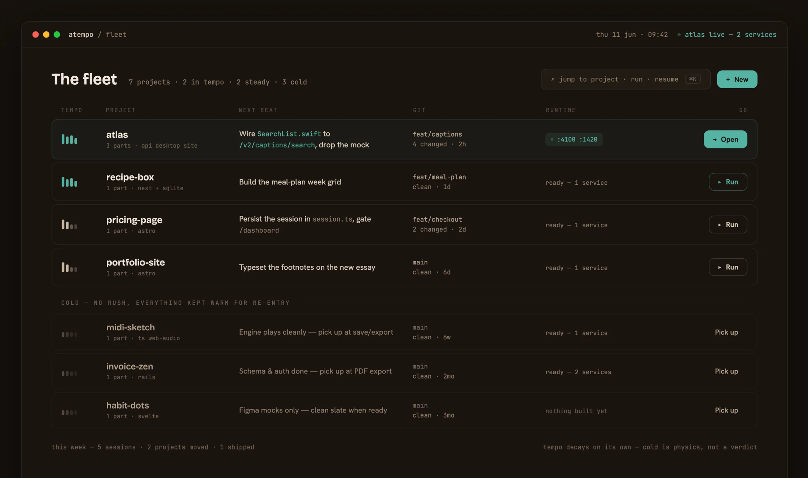

Come back in tempo, not from a cold start.
Atempo is a CLI and desktop app that scaffolds your project stacks, runs them, and keeps your whole portfolio in one place — so you can drop a project and pick it back up weeks later, in tempo.
what you run
$ atempo start my-app
app up on :8000 ✓
What it does
Scaffold a stack, run your fleet, pick up cold.
It manages two things at once: the stacks that run your projects, and the context you lose between sessions.
Spin up a stack
One command scaffolds the project, writes the Docker setup, and assigns conflict-free ports across your fleet. Bring it up the same way.
$ atempo create laravel my-app
Run the fleet
Start, stop, and check any project without remembering where it lives or which port it grabbed. Cold projects stay stopped — only what's in tempo runs.
$ atempo start · stop · status
Pick up where you left off
Every project carries a recap built from real signals — branch, last commit, changed files, what's running — plus the next concrete move.
feat/captions · 4 changed · 2h
Hand Claude your runtime
Over MCP, Claude sees your live environment — which services are up, the real ports, the branch you're on — not just your code.
postgres:16 :5432 ✓ up
The problem
When you build a lot at once, the work survives but the rhythm doesn't.
You switch away, come back weeks later, and the thread is gone — in two places at once.
In your head
What you were mid-thought on. Why that file was open. What the next move was going to be.
In the machine
What was running. Which env, which port. What the run command even was.
The expensive part of coming back isn't the code — it's rebuilding that context. Atempo makes re-entry cost almost nothing.
The studio
A live view of everything you're building.
What's running, what's dormant, last touched — sorted by tempo, so the thing most worth resuming is the first thing you see.

Each project carries its tempo, next beat, branch, and runtime — readable at a glance.
Tempo
Status as a feeling of pace, not health.
Projects don't have a server status. They have a tempo, and it decays on its own from last activity.
In tempo
Actively in flow. Running, and the first thing you see.
Steady
Shipped and stable. Resting between sessions, ready when you are.
Cold
Drifted. Cold is physics, not a verdict — nothing failed, the project just cooled. Returning should feel free.
The runtime bridge
Claude reads your code. Atempo shows it your running environment.
Inside a session Claude can't see what's actually up — only your source. Over MCP, Atempo hands it the live runtime: which services are running, the real port assignments, the branch you're on — so it works from what's actually live, not a guess at your setup.
atlas · feat/captions · 4 changed · 2h
postgres:16 :5432 ✓ up
redis:7 :6379 ✓ up
uvicorn :8000 ✓ up
One engine, three faces
All the orchestration lives in one Go core. Everything else is a thin face over it.
CLI
DRIVE IT YOURSELF
The cockpit. Full manual control — create, start, logs, status, per-service — for living in the terminal.
Desktop
THE DOORWAY
The calm studio. Fleet-at-a-glance and visual re-entry. Orchestration is done for you and shown, never operated.
MCP server
THE BRIDGE
Hands Claude the live runtime context it otherwise can't see — services, ports, environment, branch.
Install
The CLI works today. Install it in one line.
Requires Go 1.23+. The desktop app is in development — for now, drive the CLI.
go install github.com/rhys-atempo/atempo@latest
# check your environment (needs Docker + Compose v2, Git)
atempo doctor
# scaffold and wake a project
atempo create laravel:12 my-app
atempo start my-app
Open source with attribution. Builds from source too — see the repository.